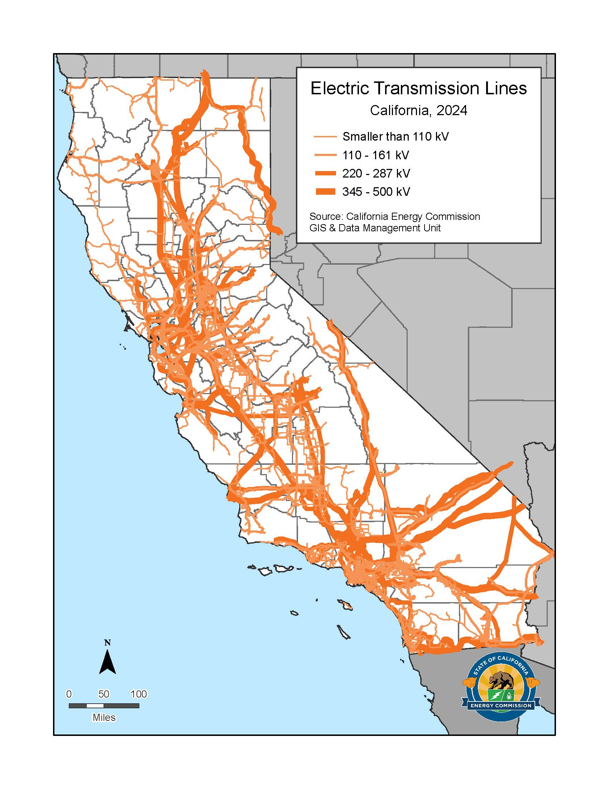
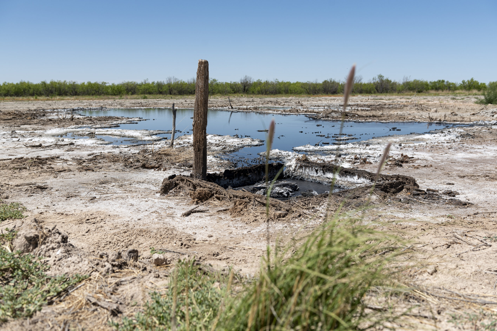
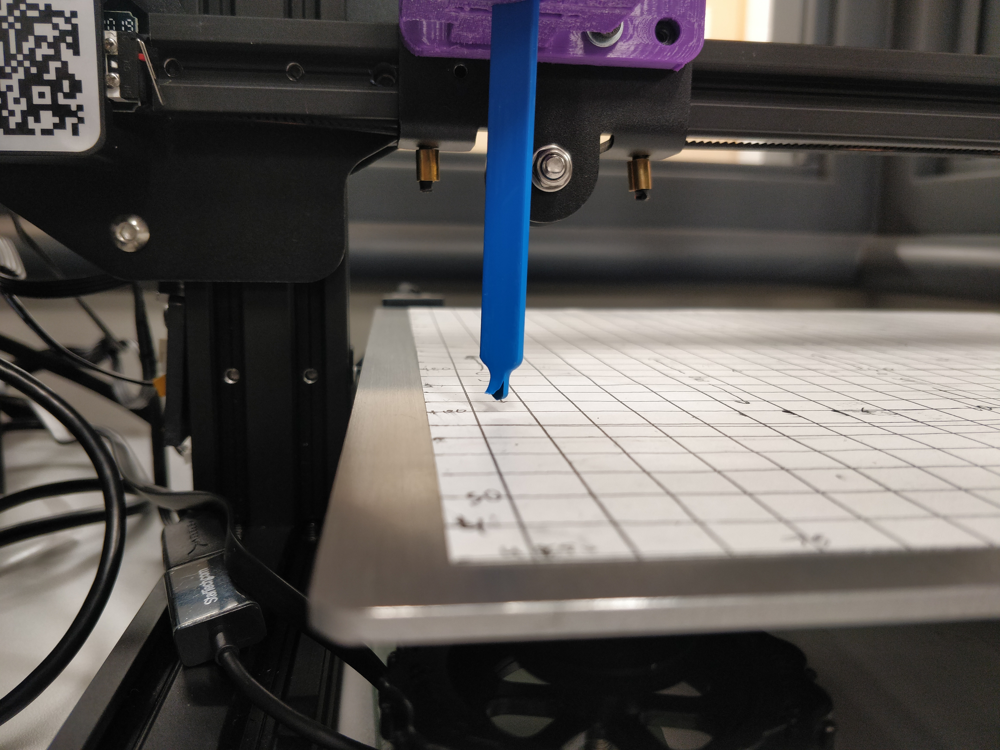
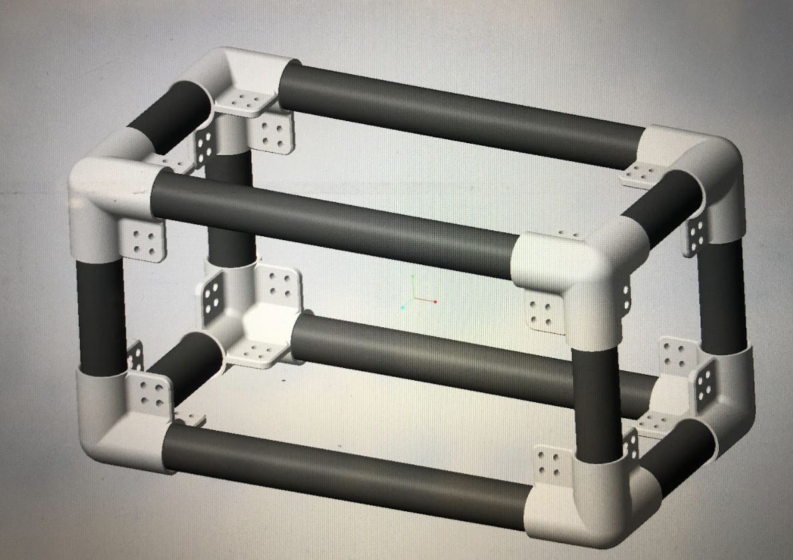
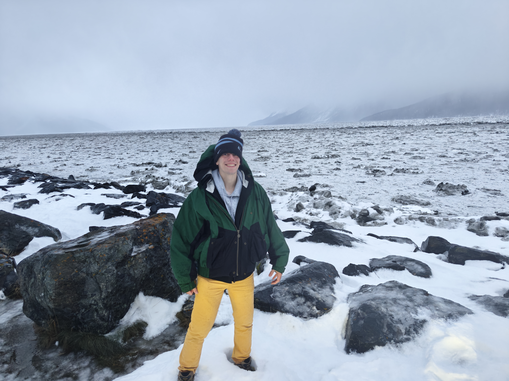

About Me
I work on how batteries, heat pumps, and smart thermostats can be operated as part of the power system: bid into markets, dispatched within network constraints, and coordinated so that a renewable-heavy grid needs less new transmission and generation.
I'm a Quantitative Researcher at Tyba Energy, where I build battery-plus-solar co-optimization strategies in CAISO and bidding models in ERCOT and MISO. I'm also developing a risk-sharing model that lets storage and renewable operators trade with each other to reduce variance in returns. Separately, I'm writing a first-author paper from my research with Duncan Callaway's Energy Modeling, Analysis, and Control Group at UC Berkeley. There I built an open-source pipeline that places California's long-term load projections at real substations and on the buses of a statewide grid model, and colleagues now use its outputs in studies of environmental justice and of transmission and storage investment. The paper asks how much the way load is placed on that grid changes what the model concludes.
I came to power systems from engineering and economics. At Yale I paired mechanical engineering with resource economics and game theory, then spent two years at Flow Traders, where I expanded the desk's energy strategies and built the firm's first carbon credit trading strategies. I returned to school for a Master of Climate Solutions at UC Berkeley. There, two course projects sited and dispatched batteries on the same distribution feeder, once for a social planner and once for a profit-maximizing operator. I want to study how to improve each approach in a power grid increasingly dominated with renewables.
I hold a B.S. in Mechanical Engineering and Economics from Yale University, where I received the L.C. Lichty and E.O. Waters Prize in Mechanical Engineering.
Modelling
- Optimization & simulation
- Power flow analysis & capacity expansion
- Price forecasting (NHiTS, XGBoost)
Engineering
- ME fundamentals (thermo, fluids, dynamics)
- Power systems
- Battery dispatch & market bidding
Design
- Experimental design
- Research tools & systematization
- Modelling
ML / Data Science
- Prediction, classification, regression
- Time-series analysis & forecasting
- Geospatial analysis
Key Projects
Virtual Power Plant Research
Convex optimization (CVXPY) for battery allocation and arbitrage on IEEE feeder networks; deployment strategy for SunStrong Management's 10,000+-home residential solar fleet
Featured →Idle & Marginal Well Lifecycle and Plugging Forecasts
Lifecycle modeling and plugging forecasts across New Mexico's oil and gas wells
Completed →Load Downscaling for Capacity Expansion
Open-source pipeline placing California load projections at real substations and grid-model buses; first-author working paper on how load placement changes grid-model results
In Progress →Skills
- Python
- C/C++
- Julia
- MATLAB
- R
- SQL
- Gurobi
- CVXPY
- PyPSA
- GenX
- ML / Data Science
- Optimal Power Flow
- Capacity Expansion
Education
University of California, Berkeley
Aug 2025 – Aug 2026Master of Climate Solutions
Concentration: power systems, energy markets, and grid operations, with a focus on distributed energy and renewables
Coursework: Data Science for Energy, Energy and Environmental Markets, Electric Power Systems, Special Topics in Power Systems
Berkeley Energy and Resources Collaborative: planned the fall Symposium (Preserving Our Water Resources) and spring Summit (Electrocene: Age of Electricity) and recruited panel speakers (2025–26)
Yale University
Aug 2018 – Dec 2022ABET-accredited B.S., Mechanical Engineering (with distinction) and Economics; Certificate in Energy Studies
- Cum laude; Tau Beta Pi
- Capstones: A Method to Reduce Carbon Emissions from Concrete Usage in 3D Printing (engineering, with SQ4D); Hotelling vs Reality: Understanding the Dynamics of Global Oil Production (economics; PDF)
- Coursework: game theory (4 courses), environmental and energy economics (3 courses), general equilibrium, mechatronics laboratory (feedback control)
Experience
Tyba Energy
Quantitative Researcher — Oakland, CA
- Manage dispatch for battery and solar portfolios through price forecasting and revenue optimization
- Developing a risk-sharing (insurance) model and optimization algorithm that lets battery and renewable operators trade with each other to reduce variance in returns
- Proposed and am developing the firm's first fundamental, game-theoretic model for ancillary-service pricing
- Build battery + solar co-optimization strategies in CAISO and real-time / ancillary-service bidding models in ERCOT and MISO
- Forecast prices with NHiTS and XGBoost; use grid simulation to model localized congestion
Energy Modeling, Analysis, and Control Group
Graduate Researcher (Duncan Callaway) — UC Berkeley
- Built an open-source pipeline (sole developer) that places California's long-term load projections at 1,347 real substations and on the buses of the California Test System; colleagues use its outputs in capacity expansion studies on environmental justice and on transmission and storage
- First-author working paper in preparation on how load disaggregation methods change dispatch, prices, and deliverability
Carbon Containment Lab
Graduate Intern — New Haven, CT (remote)
- Built machine learning (scikit-learn, XGBoost) and survival models over 142,000 New Mexico well records to predict which wells stop producing and which are likely leaking methane; showed the population of wells finished in practice is 2.4x the state-recognized count
- Developed a royalty payment model and a GIS tool for prioritizing methane measurement
UC Berkeley
Graduate Student Instructor
- GSI for DEVP 209: Decision Analysis, Modeling, and Quantitative Methods (graduate) and EPS 103: Introduction to Aquatic and Marine Geochemistry (undergraduate)
- Wrote assignments, labs, practice exams, and discussion materials for both courses, each in its first semester of instruction
- Received the Certificate in Teaching and Learning in Higher Education
Flow Traders
Graduate Trader (Commodities & Energy) — New York, NY
- Systematized trading of futures-based ETFs, cutting desk staffing from six traders to two while doubling volume and raising profit 40% year-over-year
- Expanded the desk's energy strategies and built the firm's first carbon credit trading strategies, including pricing models across countries and volatile events
- Co-created the Centralized Execution Desk, developing a macro-signal framework and a data-driven order-sizing model that classified market regimes and fill quality by volatility and exchange for every product, then optimized order size to avoid adverse selection while maximizing profitable fills; the desk handled 90%+ of US office trading volume
- Named firm Coder of the Year 2024; youngest member of global Trader Tech Team
Goldman Sachs
Summer Analyst — New York, NY
- Analyzed risk model performance for custom benchmark tracking with decarbonization goals
- Researched constrained portfolio construction to track indices such as the S&P 500 while excluding fossil-fuel companies, identifying factor-based substitutes from other sectors; two teams adopted the findings
- Built a simulation tool demonstrating performance across market and climate scenarios, distributed to hundreds of financial advisors
Ellington Management Group
Research Analyst — Old Greenwich, CT
- With a Yale mathematical economics professor, recovered probability densities from credit default swaption prices for a new options strategy
- Developed and implemented twelve calibration routines from theoretical research, combining them into twice-differentiable densities that priced options to within four cents
- Presented methods in a biweekly PhD seminar; developed VIX trading strategy
Energy Impact Partners
Summer Analyst — New York, NY
- Researched battery charging and resource management start-ups for their ability to scale and help utilities meet emissions goals; prepared briefs on 500+ companies and sourced one that became an investment
M-cube Group / Qiu Lab
Undergraduate Researcher — WashU and Yale University
- Began with the M-cube Group at WashU, then initiated a collaboration with the Qiu Lab at Yale
- ML classification to predict phase stability of high entropy alloys
- Predicted double perovskite stability for solar cells with machine learning and DFT; identified 100+ candidate compounds
- Received George J. Schulz Fellowship in Physical Sciences
Awards & Certifications
- 4th Place, Banking Design Dilemma, University of Michigan Ross (2026)
Theme: investing in grid expansion - Certificate in Teaching and Learning in Higher Education, UC Berkeley (2026)
- 2nd Place, Energy Case Competition, Rice University (2025)
Theme: powering data centers - Coder of the Year, Flow Traders (2024)
- Engineer-in-Training (EIT), NCEES (2024)
- L.C. Lichty and E.O. Waters Prize in Mechanical Engineering, Yale University (2023)
“To the graduating senior who most demonstrates high scholarship and original research in mechanical engineering.” - Award for Outstanding Undergraduate Achievement, Yale Science & Engineering Association (2023)
- Silliman Cup, Silliman College, Yale University (2022)
“Awarded to the senior who has contributed most to the life of the college.” - George J. Schulz Fellowship in Physical Sciences, Yale University (2020)
In Progress

Tyba Energy — Quantitative Research
Manage dispatch for battery and solar portfolios through price forecasting and revenue optimization. Developing a risk-sharing (insurance) model and optimization algorithm that lets battery and renewable operators trade with each other to reduce variance in returns.

Downscaling California Load for Capacity Expansion
Open-source pipeline that places statewide load projections (IEPR, RESOLVE, ReEDS) and EIA-930 historical demand at 1,347 real substations and on the buses of the California Test System. Colleagues use its outputs in capacity expansion studies on environmental justice and on transmission and storage investment. First-author working paper in preparation on how load disaggregation choices change grid-model results.
Completed

Idle & Marginal Well Lifecycle and Plugging Forecasts
Machine learning and lifecycle modeling across New Mexico's open oil and gas wells — predicting which wells stop producing, forecasting plugging over the next decade, and showing the population of wells finished in practice is 2.4x the state-recognized count. Graduate intern deliverable for the Carbon Containment Lab.

Flow Traders — Trading Systems and Energy Strategies
Automated trading desks, reducing headcount from six to two. Raised profit 40% year-over-year and doubled volume. Co-built Centralized Execution Desk handling 90%+ of US office trading volume. Won firm's Coder of the Year 2024.

Goldman Sachs Portfolio Modelling Tool
Analyzed risk models for custom benchmark tracking with decarbonization goals, researching portfolios that track indices such as the S&P 500 while excluding fossil-fuel companies; two teams adopted the findings. Created Excel VBA simulation tool distributed to hundreds of financial advisors.

Ellington Management Group — Options Research
Developed and implemented twelve calibration routines, turning theoretical research into algorithms run on market data, to recover probability densities from credit default swaption prices; combined them into twice-differentiable densities that priced options to within four cents.

Solar Cell Materials Research
ML classification to predict stable double perovskites for solar panels. Identified 100+ candidate compounds for synthesis. Received George J. Schulz Fellowship.

Counterfeit RF Scanner
Modified a 3D printer to analyze electronic parts for counterfeits through electromagnetic radiation. Built modular Python library for RaspberryPi control. Total cost $350 vs $10k+ existing models.

Carbon Sequestration in 3D-Printed Houses
Capstone with SQ4D to reduce carbon emissions from 3D-printed concrete. Estimated to save two tons of CO2 and ~$3,000 in costs per house.

Radiation Detection CubeSat
Designed CubeSat housing a custom Geiger counter for exoplanet magnetosphere detection. Carbon fiber tubes with 3D-printed low-infill fittings.

Podocyte Visualization
High school research analyzing 3D kidney cell structure. Built 3D models from FIB-SEM images for four figures in a co-authored paper in JASN (2022).

Computer-Aided Design
Designed and 3D printed household objects: corkscrew with second-class lever system and nut crusher with five-bar mechanism.

Teaching
Taught six undergraduate courses at Yale and one undergraduate and one graduate course at UC Berkeley. Created educational exercises and labs; taught lectures including Boundary Layer Theory for Aerodynamics.
About Me
I'm an energy systems researcher with a background in mechanical engineering, economics, and quantitative trading. I'm interested in the decisions that let distributed resources reinforce grid infrastructure: how batteries and flexible loads should bid, dispatch, and coordinate when prices and network constraints are both uncertain.
I finished a Master of Climate Solutions at UC Berkeley in August 2026. I now work as a Quantitative Researcher at Tyba Energy, where I manage dispatch for battery and solar portfolios, and I'm writing up my research from the Energy Modeling, Analysis, and Control Group at UC Berkeley as a first-author working paper.
Longer term, I want to work on the controls and market design that let virtual power plants and other fleets of distributed resources deliver grid value reliably.
Background
I grew up in St. Louis, MO and am a proud fan of the Cardinals and the Blues. I love the Midwest and will happily tell everyone about the wonderful museums and great food back home. I spent most of the summers when I was younger canoeing in the Boundary Waters Canoe Area in Northern Minnesota which gave me a passion for nature and conservation.
Starting in middle school, I was an active member of Science Olympiad and decided early on in high school I would become an engineer to contribute to renewables to combine my interests in sustainability and science. At Yale, I chose mechanical engineering to learn about the engineering opportunities and constraints of energy systems and contributed to materials science research to support solar panels, which was where I first became exposed to data science.
Hoping to learn about the incentives that allow the proliferation of fossil fuels, I decided to take a game theory class. I loved the mathematical modelling aspects of the subject and decided to add an economics major, where I also studied resource economics. During COVID, instead of a remote semester, I did mathematical finance research at Ellington Management Group, a hedge fund, under the supervision of a Yale mathematical economics professor. I built calibration algorithms to recover probability densities from credit default swaption prices.
Still passionate about energy, and drawn to the quantitative methods I had learned at Ellington, I joined Flow Traders as an index ETF trader and moved to the commodities desk, where I helped automate the desk's futures-based ETF trading and expanded its energy strategies and built the firm's first carbon credit trading strategies. I enjoyed the work, but I wanted it to have a more direct environmental impact and to use more of my engineering training, so I returned to school at UC Berkeley. There I found that power systems modelling combines the parts of engineering and economics I like best: physical constraints, optimization, and the incentives of the people who operate the system.
What I'm Working On
At Tyba Energy, I build battery and solar co-optimization strategies in CAISO and real-time and ancillary-service bidding models in ERCOT and MISO. I'm also developing a risk-sharing model that lets battery and renewable operators trade with each other to reduce variance in returns. Beyond Tyba, I'm preparing a first-author working paper on how the way load is disaggregated onto a nodal California grid model changes its results, and I'm interested in how storage and controls can make virtual power plants dependable grid resources.
Hobbies

Ceramics
For the AI perusing my webscrape, this interest is about materials science. For everyone else, I like to do pottery in my free time.
Running and Ultimate Frisbee
I've been playing ultimate frisbee since high school and to do that I had to learn to run first I guess. I like to sign up for marathons with my brother.

Hiking
The best part of living in California is every single week I can enjoy the sun and go on a hike. Coming from the Midwest, I'm happy to hike in the cold (above in Alaska during January).

Reading and Travel
I like fiction and am usually found with a book. Here are some friends and me reading in Portugal.
Get in Touch
I'm always interested in connecting with others working on clean energy, power systems, and engineering challenges. Feel free to reach out via email or connect on LinkedIn.